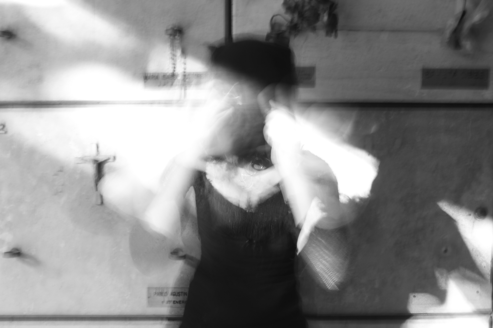

Performativo; En el sentido en que todo lo que decidimos compartir es una decisión consciente de lo que hacemos y mostramos a los demás para demostrar algo en especifico. Tenemos identidades performativas en agenciamiento con lo que necesitemos/queramos, creadas en este caso por las redes. ¿Quieres una pareja?, ¿Amistad?, ¿Fama?, ¿Quieres ser divertidx?, ¿Quieres expresar rabia? ¿Quieres que las cosas cambien? Existen distintas redes para cada una de estas cosas. Tienes la total libertad de pretender todas estas cosas en un espacio virtual donde existe una autorregulación, pero por sobre todo la búsqueda de una aprobación (O por lo menos de una reacción) social. Tenemos una identidad performativa, la cual en casos extremos pensamos como el verdadero yo, somos espectadores del resto de identidades en un flujo de expresiones interminable, pero controlado, registrado, aceptado, calculado. El capitalismo (mal llamado facismo en sus momentos represivos) ya no necesita dictaduras debido a que la lucha del individuo por su libertad, POR SU IDENTIDAD, ahora, al ser consumidor, se vuelve un producto más; controlado, registrado, aceptado, calculado.